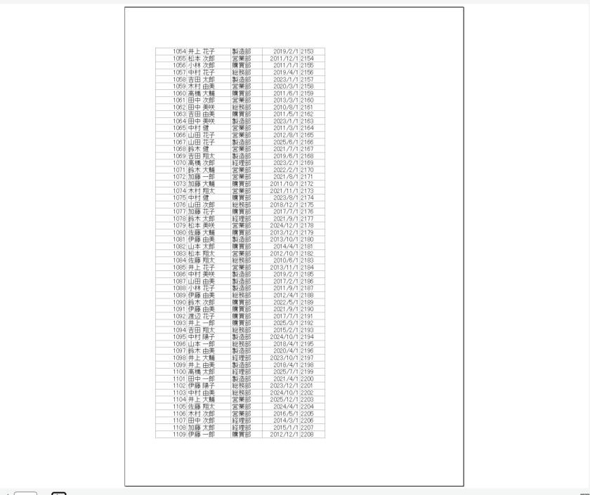
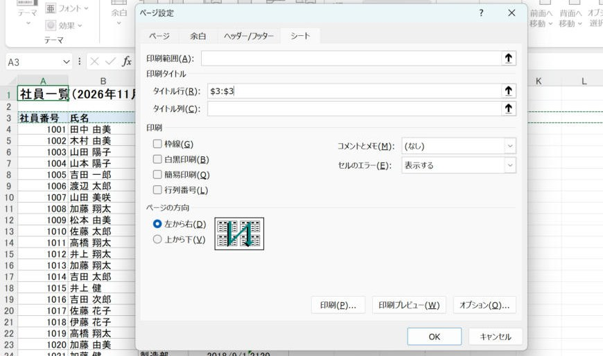
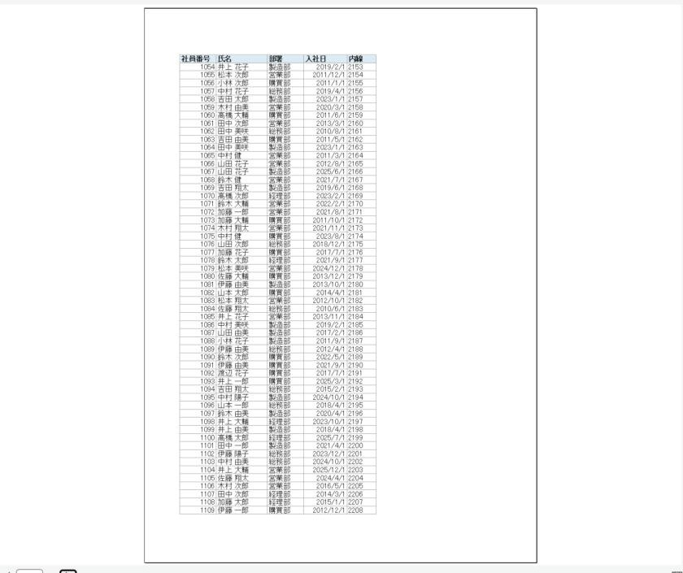
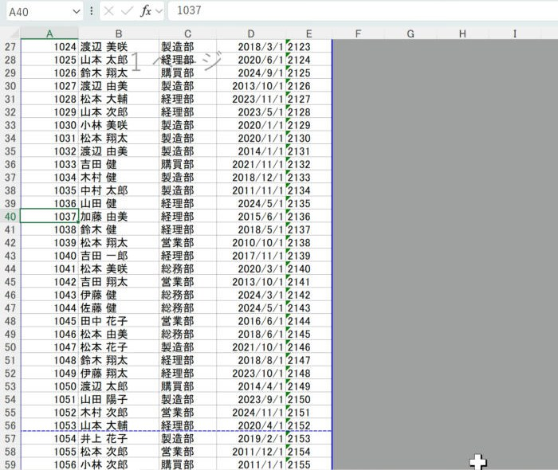
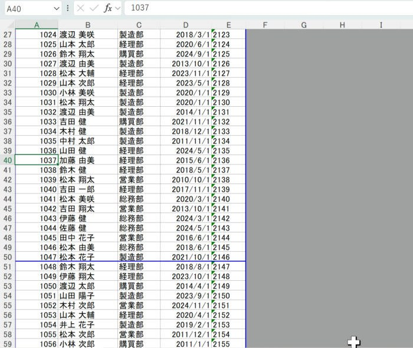

Excelで2ページ目以降にも見出しを印刷する方法（印刷タイトルと改ページプレビュー）
複数ページになる表を印刷すると、2ページ目以降に見出し行が出ません。Excelの「印刷タイトル」で見出し行を全ページに付け、「改ページプレビュー」でページの切れ目を決める方法を、実際の画面で説明します。
💡 やりたいこと
120行ある社員一覧を印刷すると、2ページ目以降に見出し（社員番号・氏名・部署…）が出ません。どの列が何かわからず、1ページ目と見比べることになります。
この記事では、Excelの「印刷タイトル」で見出し行を全ページに付け、「改ページプレビュー」でページの切れ目を自分で決める方法を、実際のExcelの画面で説明します。どちらも数式やVBAは使いません。
| 困りごと | 使う機能 | 場所 |
|---|---|---|
| 2ページ目以降に見出し行が出ない | 印刷タイトル（タイトル行） | 「ページ レイアウト」タブ →「印刷タイトル」 |
| 区切りの悪い行でページが変わる | 改ページプレビュー | 「表示」タブ →「改ページ プレビュー」 |
撮影に使った表
A1に表のタイトル「社員一覧（2026年11月）」、3行目に見出し（社員番号・氏名・部署・入社日・内線）、4行目から120人分のデータが並ぶ表です。名前はすべて架空のデータです。
そのまま印刷プレビューを見ると、2ページ目は見出しのないデータだけが並びます。

手順1：印刷タイトルで見出し行を全ページに付ける
- 「ページ レイアウト」タブ →「ページ設定」グループの「印刷タイトル」を押します。
- 「ページ設定」の画面が「シート」タブで開きます。
- 「印刷タイトル」の「タイトル行」の入力欄をクリックし、シートの3行目の行番号をクリックします。
$3:$3と入ります。 - 「OK」を押します。

印刷プレビュー（Ctrl+P）で2ページ目を見ると、先頭に見出し行が付いています。

- 表のタイトル（1行目）は入れなくてかまいません。毎ページに出したいのは列の見出しだけ、という場合がほとんどです。表のタイトルも毎ページに出したい場合は「$1:$3」にします。
- 横に長い表で、左端の列（社員番号・氏名など）を毎ページに出したいときは「タイトル列」に列を指定します（例：
$A:$B）。 - 印刷タイトルはシートごとの設定です。別のシートには別に設定します。
「印刷タイトル」が押せない（灰色）とき
複数のシートを選んだ状態（グループ）になっていると押せません。シート見出しを1つだけクリックしてから押します。また、ページ設定の画面を印刷プレビュー（Ctrl+P）の「ページ設定」から開いた場合は、タイトル行の欄が使えません。「ページ レイアウト」タブから開きます。
複数のシートを選んだ状態（グループ）になっていると押せません。シート見出しを1つだけクリックしてから押します。また、ページ設定の画面を印刷プレビュー（Ctrl+P）の「ページ設定」から開いた場合は、タイトル行の欄が使えません。「ページ レイアウト」タブから開きます。
手順2：改ページプレビューでページの切れ目を決める
印刷タイトルで見出しは付きましたが、ページの切れ目は用紙の大きさで自動に決まります。部署ごと・50人ごとなど、区切りのよいところでページを変えたいときは改ページプレビューを使います。
- 「表示」タブ →「改ページ プレビュー」を押します（画面右下の表示切り替えボタンからも切り替えられます）。
- 印刷される範囲が白、印刷されない範囲が灰色で表示されます。ページの切れ目は青い線で表示されます。
- 自動で決まった切れ目は点線です。この点線を、ページを変えたい行の境目までドラッグします。
- ドラッグした切れ目は実線（手動の改ページ）に変わります。


- 切れ目を下にずらす（1ページに入る行を増やす）と、Excelは1ページに収めるために印刷の倍率を自動で小さくします。文字が小さくなりすぎていないか、印刷プレビューで確認します。
- 行を選んで「ページ レイアウト」タブ →「改ページ」→「改ページの挿入」でも、選んだ行の上に切れ目を入れられます。
- 元の表示に戻すときは「表示」タブ →「標準」を押します。標準の表示でも、切れ目の位置に細い点線が表示されます。
手動の改ページをやめたいとき
- 1か所だけやめる：切れ目の下の行を選び、「ページ レイアウト」タブ →「改ページ」→「改ページの解除」。
- 全部やめる：「ページ レイアウト」タブ →「改ページ」→「すべての改ページを解除」。自動の切れ目に戻ります。
- 印刷タイトルをやめる：「印刷タイトル」を開き、タイトル行の欄を空にして「OK」。
よくあるつまずき
| 症状 | 確認すること |
|---|---|
| ページの先頭に見出しが2行続けて出る | 以前の印刷のために、表の途中へ見出し行をコピーして貼ってあると、印刷タイトルの見出しと重なります。印刷タイトルを使う場合は、表の途中の見出し行を削除します。 |
| 2ページ目以降に見出しが出ない | 設定したのが別のシートではないか。タイトル行が「$3:$3」のように行全体の形で入っているか。 |
| 切れ目をドラッグしても思った位置にならない | 「拡大縮小印刷」で「次のページ数に合わせて印刷」を指定していると、ページ数が優先されます。「ページ レイアウト」タブの「横」「縦」を「自動」に戻します。 |
| 文字が小さくなった | 切れ目を下にドラッグして1ページに入る行を増やすと、倍率が自動で下がります。切れ目を上に戻すか、余白を狭くします。 |
画面はWindows版のExcel（Microsoft 365）で、プリンターに「Microsoft Print to PDF」を選んだ状態の印刷プレビューです。ページの切れ目の位置は、プリンターや用紙の設定によって変わります。環境により結果が異なる場合があります。紙への印刷は行っていません。